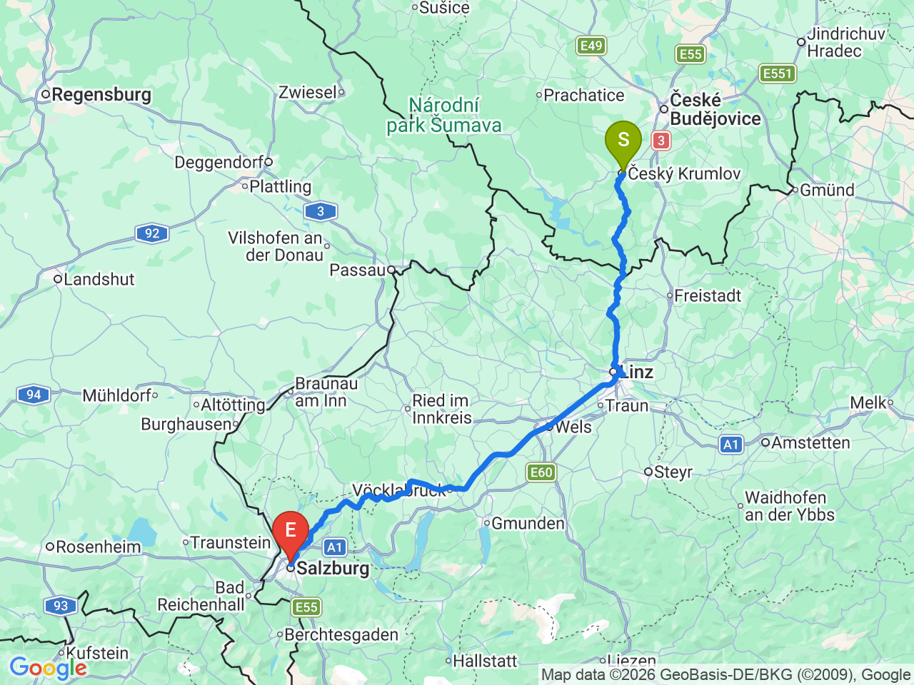
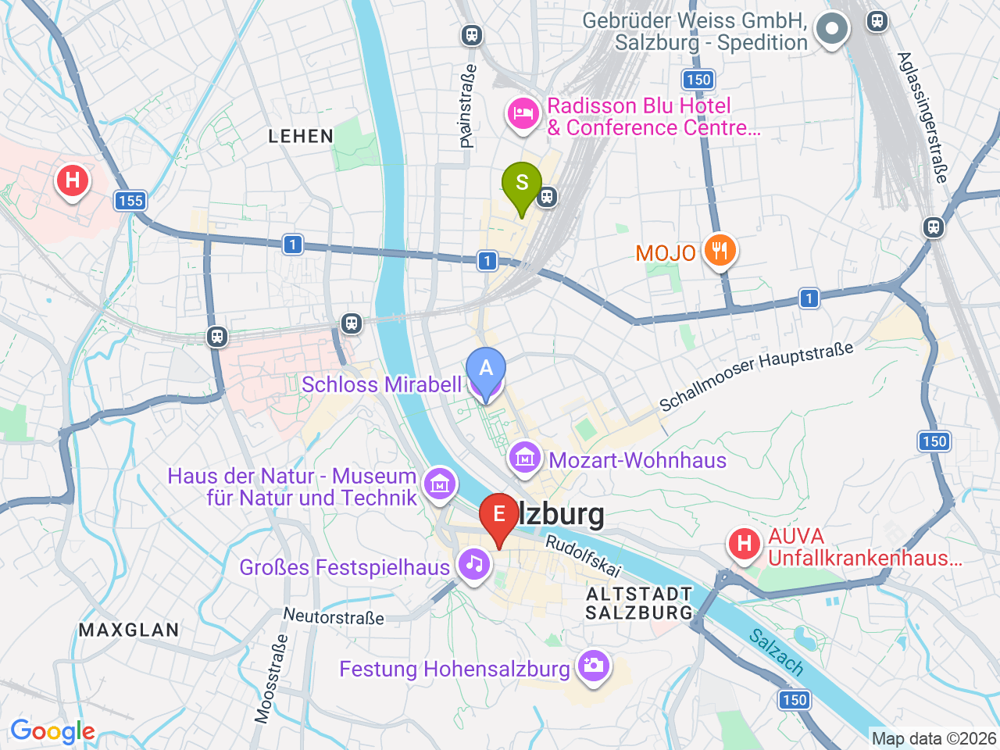

Day 29 · 2026-09-13（日）
奧地利・薩爾茲堡/德國國王湖/維也納 Day 1/9
CK 小鎮賦歸 → 薩爾茲堡初體驗
直達巴士跨國移動，下午抵達後輕鬆走訪米拉貝爾花園與糧食街
CK小鎮→薩爾茲堡

薩爾茲堡市區（含飯店）

固定時間行程DAY 29
| 時間 | 地點 | 地點 (英文) | 交通方式／班次 | 價格 | 預計停留(分鐘) | 備註 |
|---|---|---|---|---|---|---|
| 09:00 | CK小鎮搭巴士前往薩爾茲堡 | 直達巴士約2小時47分-3小時 | Bean Shuttle/FlixBus，每天約3班，確切班次請提前查詢/購票 | |||
| 12:00 | 抵達薩爾茲堡，飯店 check-in | 1Austria Trend Hotel Europa Salzburg, Salzburg | 步行 | 之後4晚都住這裡，緊鄰中央車站 |
彈性探索景點DAY 29
| 地點 | 地點 (英文) | 預計停留(分鐘) | 價格 | 備註 |
|---|---|---|---|---|
| 米拉貝爾花園 | ASchloss Mirabell, Salzburg | 約45分鐘 | 免費 | 《真善美》拍攝地之一，花園免費開放，可眺望對岸城堡 |
| 糧食街 | BGetreidegasse, Salzburg | 約45分鐘 | 免費 | 莫札特出生地所在的老城購物街，鐵藝招牌很有特色 |
| 晚餐：老城區餐廳 | 見上方三餐資訊 | 自由選擇，不特別指定 |
每日三餐
晚餐
老城區餐廳（自由選擇）約 €15-25／人
老城範圍內選擇很多，走到哪算哪；隔天(Day31)市區行程有具體推薦的午晚餐名單
住宿資訊